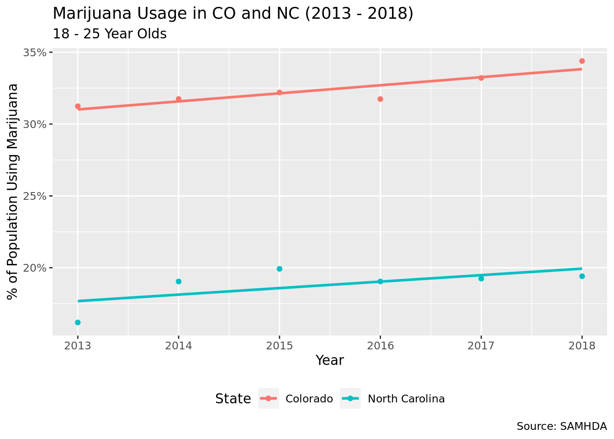
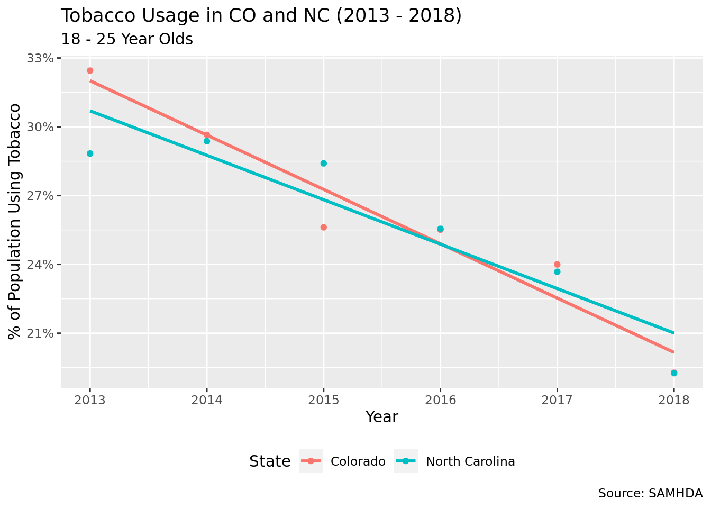
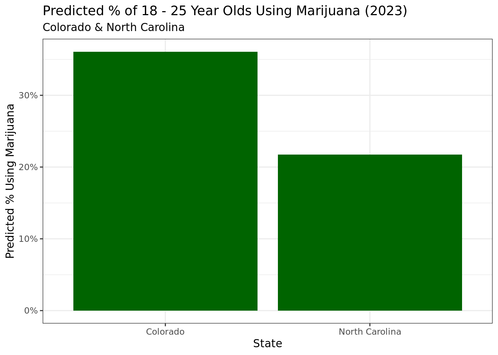
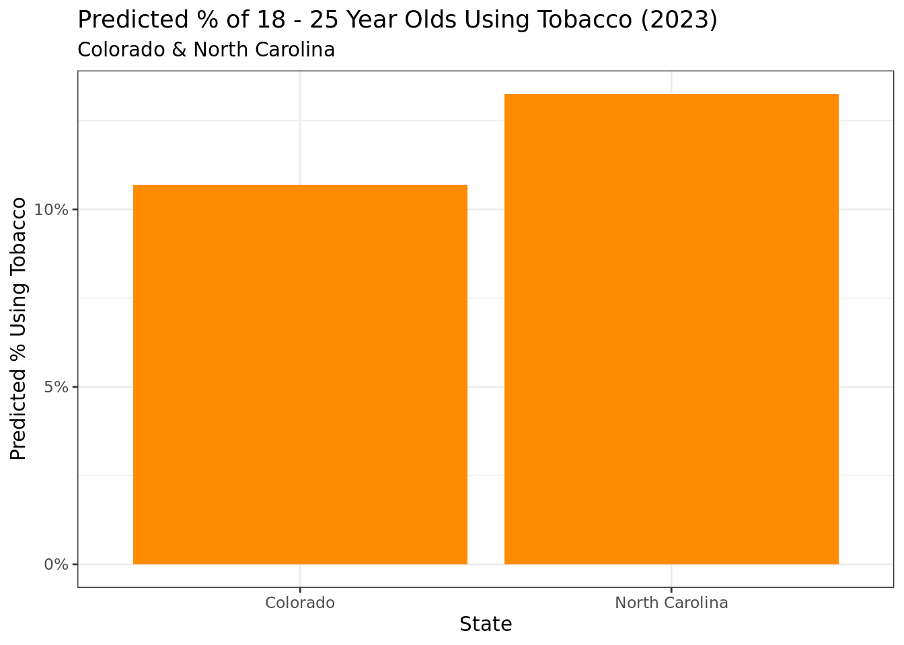

Marijuana Legalization & Effects
On 18-25 Year Olds in CO & NC
Abstract
Recently, many states have begun to legalize the recreational use of marijuana. We were interested in examining how the legalization of marijuana affected the usage of both marijuana and tobacco. To investigate, we used data collected from the National Survey on Drug Use and Health. We focused on the two states of Colorado (which legalized marijuana in 2013) and North Carolina (where marijuana remains illegal) and looked at differences in tobacco and marijuana usage between the two states in 18-25 year olds from 2013 - 2018. We performed hypothesis tests on the rate of increase in marijuana usage and the rate of decrease in tobacco usage to determine if a statistically significant difference existed among the rates between the two states. Our hypothesis was that since marijuana was legalized in Colorado, there would be a larger increase in marijuana usage and a larger decrease in tobacco usage in Colorado than in North Carolina. However, our hypothesis was wrong and we found no significant difference between the two, giving no evidence that legalizing marijuana impacts the usage rate of marijuana or tobacco.
Introduction and Data
How has the rate of marijuana and tobacco use changed from 2013 to 2018 in 18-25 year olds in North Carolina (where marijuana is illegal) and Colorado (where marijuana was legalized in 2013), and is there a significant difference between the change in marijuana and tobacco use in the two states? Given the recent increase in legalization of cannabis (Forbes) and the increase in tobacco prevention education (Tobacco Free Kids) in the past several decades, we were interested to see if marijuana usage has been increasing and tobacco usage has been decreasing among 18-25 year olds (which is our age range) from 2013 to 2018.
Our dataset contains alcohol, cigarette, cocaine, marijuana, and tobacco use statistics for all 50 states and the District of Columbia from 2002 - 2018, broken down into three age ranges: 12-17, 18-25, and 26+. The data comes from CORGIS: The Collection of Really Great, Interesting, Situated Datasets, and was originally stored in the Substance Abuse & Mental Health Data Archive (SAMHDA). The data was gathered from the annual National Survey on Drug Use and Health. There are 53 variables, including state, year, and usage (totals and rates) of various drugs for each age group. The dataset includes 867 total observations.
As mentioned earlier, we chose to focus on Colorado because marijuana was legalized there and North Carolina because that’s where we are. Therefore, we filtered the dataset for just those two states. In addition, since we are investigating marijuana and tobacco usage among 18-25 year olds we selected just marijuana usage rates and tobacco usage rates for 18-25 year olds among all the drug use data that was included. Finally, several variables were renamed and a new variable “years since legalization” was created to represent the number of years that had passed since marijuana legalization in Colorado in 2013.
It is important to consider the ethical concerns and biases that may be present in the collection of this data. Since our data comes from a voluntary response sample, it may not be entirely accurate because people can choose to not respond or to respond inaccurately, especially when regarding a topic such as drug use that has legal implications.
Rows: 867 Columns: 53
── Column specification ────────────────────────────────────────────────────────
Delimiter: ","
chr (1): State
dbl (52): Year, Population.12-17, Population.18-25, Population.26+, Totals.A...
ℹ Use `spec()` to retrieve the full column specification for this data.
ℹ Specify the column types or set `show_col_types = FALSE` to quiet this message.Literature Review
A study done from 2008 - 2016 investigated whether increases in recreational marijuana legalization led to any changes in marijuana use and cannabis use disorder. The study also used data from the National Survey on Drug Use and Health, and looked at the states of Colorado, Washington, Alaska, and Oregon because of their recent recreational marijuana legalization and compared them to other “control” states where recreational marjuana has not been legalized. To examine if there were differences in marijuana usage after its legalization, the authors looked at the three age ranges of 12-17 years old, 18-25 years old, and 26+ years old and constructed logistic regression models that measured before vs after changes in variables such as self reported past month marijuana use, frequent marijuana use, and cannabis use disorder. They found that for 12-17 year olds, legalization of marijuana led to an increase in cannabis use disorder, and for 26+ year olds past month marijuana usage increased. However, for 18-25 year olds there were no significant increases in marijuana use or cannabis use disorder. This study is related to our research because it also looks at the effects of marijuana legalization. However, our study adds to this work by also examining whether marijuana legalization has any impact on tobacco usage as well.
Source: Cerdá, Magdalena et al. “Association Between Recreational Marijuana Legalization in the United States and Changes in Marijuana Use and Cannabis Use Disorder From 2008 to 2016.” JAMA Psychiatry, vol. 77, no. 2, Nov. 2019, doi:10.1001/jamapsychiatry.2019.3254.
Methodology
`geom_smooth()` using formula = 'y ~ x'
`geom_smooth()` using formula = 'y ~ x'
`geom_smooth()` using formula = 'y ~ x'
To explore our research question, we conducted two hypothesis tests for a difference in the regression coefficients (the difference in the rate of change) of marijuana usage and tobacco usage in Colorado and North Carolina. To do this, we built two interaction models that examined the interaction effect that the state (CO or NC) and explanatory variable (years since legalization) had on the response variables (marijuana usage rate and tobacco usage rate. We then used the p-value of the interaction term given by the model in our hypothesis test.
Hypothesis Test for Marijuana
\(H_0:\beta_{Col\_mar} - \beta_{NC\_mar} = 0\)
\(H_a:\beta_{Col\_mar} - \beta_{NC\_mar} > 0\)
Null hypothesis: There is no difference in the rate of increase in marijuana usage in Colorado and North Carolina between 2013-2018.
Alternative Hypothesis: The increase in marijuana usage in Colorado is greater than the increase in marijuana usage in North Carolina from 2013-2018.
# A tibble: 4 × 5
term estimate std.error statistic p.value
<chr> <dbl> <dbl> <dbl> <dbl>
1 (Intercept) 0.310 0.00653 47.5 4.27e-11
2 yrs_since_legal 0.00562 0.00216 2.61 3.13e- 2
3 StateNorth Carolina -0.133 0.00924 -14.4 5.17e- 7
4 yrs_since_legal:StateNorth Carolina -0.00110 0.00305 -0.362 7.27e- 1Hypothesis Test for Tobacco:
\(H_0:\beta_{Col\_tob} - \beta_{NC\_tob} = 0\)
\(H_a:\beta_{Col\_tob} - \beta_{NC\_tob} < 0\)
Null hypothesis: There is no difference in the rate of decrease in tobacco usage in Colorado and North Carolina from 2013-2018.
Alternative Hypothesis: The decrease in tobacco usage in Colorado is greater than the decrease in tobacco usage in North Carolina from 2013-2018.
# A tibble: 4 × 5
term estimate std.error statistic p.value
<chr> <dbl> <dbl> <dbl> <dbl>
1 (Intercept) 0.320 0.0104 30.7 0.00000000139
2 yrs_since_legal -0.0237 0.00345 -6.87 0.000128
3 StateNorth Carolina -0.0131 0.0148 -0.889 0.400
4 yrs_since_legal:StateNorth Carolina 0.00431 0.00488 0.884 0.402 

Results
Regression Equations
Marijuana usage in Colorado after legalization (2013 - 2018):
\(CO\_marijuana\_usage\_rate = 0.3101 + 0.0056 * year\)
Marijuana usage in North Carolina 2013 - 2018:
\(NC\_marijuana\_usage\_rate = 0.1768 + 0.0045 * year\)
\(year\) = number of years since marijuana legalization in Colorado (2013)
p-value of interaction between explanatory variable (year) and category (state: NC/CO): 0.73
Tobacco usage in Colorado after marijuana legalization (2013 - 2018):
\(CO\_tobacco\_usage\_rate = 0.3201 - 0.0237 * year\)
Tobacco usage in North Carolina 2013 - 2018:
\(NC\_tobacco\_usage\_rate = 0.3070 - 0.0193 * year\)
\(year\) = number of years since marijuana legalization in Colorado (2013)
p-value of interaction between explanatory variable (year) and category (state: NC/CO): 0.4
For both of our hypothesis tests, the p-value of the interaction between our explanatory variable (the number of years since marijuana legalization in Colorado in 2013) and our category (the two states Colorado and North Carolina) was much higher than our chosen significance level of 0.05. Therefore, we failed to reject the null hypothesis that there is no difference in the rate of increase in marijuana usage and the rate of decrease in tobacco usage between North Carolina and Colorado.
Predictions
Using our interaction models that looked at the relationship between state and years since legalization with marijuana and tobacco usage rates, we made predictions for these rates for 2022. If the trends we observed from 2013-2018 continued to present day, we found that marijuana usage rates in NC and CO in 2022 would be 21.7% and 36.1%, respectively and that tobacco usage rates in NC and CO would be 13.3% and 10.7%, respectively. Although we are cautious to extrapolate beyond the scope of the data, it would be interesting to see how the current usage rates compare.
Discussion
Overall, through our analysis of drug use in the CO and NC, we found that there was no difference in marijuana and tobacco usage rates in the state where marijuana was legalized (CO) and where marijuana was not legalized (NC). However, some of the limitations present in our analysis were that we only looked at two states and only six years worth of data, and the data could be biased from voluntary response. In the future, we hope to look more into different states of differing legalization statuses as well as more datasets, which would be able to provide more years to analyze, maybe looking at the effect of the COVID-19 pandemic.